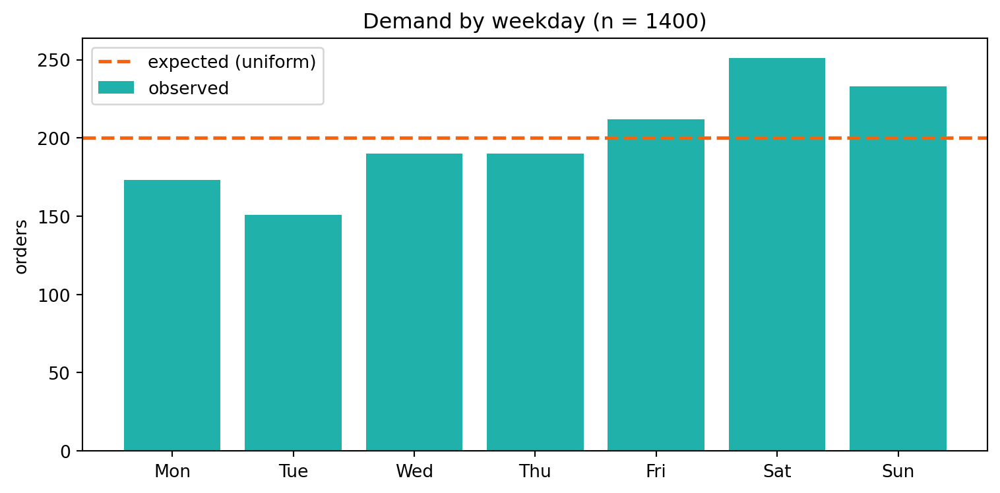
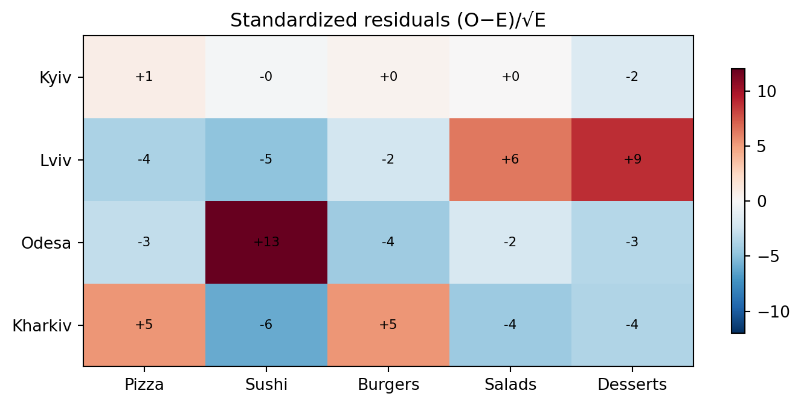

DAYS = ["Mon", "Tue", "Wed", "Thu", "Fri", "Sat", "Sun"]
CUISINES = ["Pizza", "Sushi", "Burgers", "Salads", "Desserts"]
CITIES = ["Kyiv", "Lviv", "Odesa", "Kharkiv"]
def order_counts(probs, n, seed=None):
"""n orders spread across categories with probabilities `probs`."""
probs = np.asarray(probs, float)
probs = probs / probs.sum()
return np.random.default_rng(seed).multinomial(n, probs)Practice 7
χ² tests for categorical data
What we do today
Previous practices worked with numeric metrics (ARPU, time-to-event). But half of product data is counts in categories: day of week, chosen cuisine, city, “converted / not”. Today’s tool is exactly for that, and all its flavours reduce to one statistic:
\[ \tau = \sum_{\text{cells}} \frac{(O - E)^2}{E}, \]
where \(O\) are observed counts and \(E\) are the counts expected under the hypothesis.
We build guardrails for categorical A/B testing and analytics of the GreenBowl delivery app (the same one from Practices 4–6) and answer four applied questions:
- Is demand uniform across weekdays (planning cook shifts)?
- Does the choice of cuisine depend on the city (region-specific menu)?
- Did an A/B menu redesign change the distribution of order categories?
- Did a promo pilot in a new city work on a small sample?
1 Case: GreenBowl categorical data
We generate all the data ourselves — that way we always know the “truth” and can check whether the criterion catches it. Base categories:
A single function order_counts is our “log generator”: we set the true category probabilities and it returns observed counts.
2 Part I — Goodness-of-fit: is demand uniform?
Case. The operations manager schedules the same number of cooks every day of the week. An analyst suspects demand is non-uniform and shifts should be reallocated. Over a week — 1400 orders.
2.1 Version 1 — a goodness-of-fit verdict
def gof_test(observed, p0=None, alpha=0.05):
"""Version 1. Chi-square goodness-of-fit test.
observed --- observed counts over k categories.
p0 --- expected probabilities (None → uniform distribution).
"""
observed = np.asarray(observed, float)
n, k = observed.sum(), len(observed)
if p0 is None:
p0 = np.full(k, 1 / k)
expected = n * np.asarray(p0, float)
res = chisquare(observed, f_exp=expected)
verdict = ("⛔ reject H0 → the distribution is NOT what we assumed"
if res.pvalue <= alpha else
"✅ do not reject H0 → data are consistent with the hypothesis")
return {"chi2": res.statistic, "df": k - 1, "p": res.pvalue,
"min_expected": expected.min(), "verdict": verdict}Apply it to demand by day. H0: demand is uniform (\(1/7\) per day).
orders = order_counts([0.13, 0.12, 0.13, 0.13, 0.15, 0.18, 0.16],
n=1400, seed=7)
r = gof_test(orders) # p0=None → testing uniformity
print("Orders by day:", dict(zip(DAYS, orders)))
print(f"chi2 = {r['chi2']:.2f}, df = {r['df']}, p = {r['p']:.4f}")
print(r["verdict"])
fig, ax = plt.subplots(figsize=(8, 4))
ax.bar(DAYS, orders, color=turquoise, label="observed")
ax.axhline(orders.mean(), color=red, ls="--", lw=2,
label="expected (uniform)")
ax.set_ylabel("orders"); ax.set_title("Demand by weekday (n = 1400)")
ax.legend()
plt.tight_layout()
plt.show()Orders by day: {'Mon': np.int64(173), 'Tue': np.int64(151), 'Wed': np.int64(190), 'Thu': np.int64(190), 'Fri': np.int64(212), 'Sat': np.int64(251), 'Sun': np.int64(233)}
chi2 = 35.82, df = 6, p = 0.0000
⛔ reject H0 → the distribution is NOT what we assumed
The Friday–Saturday–Sunday spike “pulls” the statistic: \(p < 0.05\), demand is not uniform. Recommendation to ops: reinforce weekend shifts.
3 The expected-count rule — and why it exists
Chi-square relies on a normal approximation (CLT), which breaks for rare categories. The rule: every expected count \(E_i \ge 5\). Let’s check this not on faith but with Monte Carlo: does the criterion hold 5% false alarms when one category is very rare?
def gof_fpr(probs, n, n_exps=4000, seed=73):
"""FPR of the goodness-of-fit test under H0 (data from the same probs)."""
rng = np.random.default_rng(seed)
expected = n * np.asarray(probs, float)
rej = sum(chisquare(rng.multinomial(n, probs), f_exp=expected).pvalue < 0.05
for _ in range(n_exps))
lo, hi = proportion_confint(rej, n_exps, alpha=0.05, method="wilson")
return {"fpr": rej / n_exps, "ci": (lo, hi), "min_expected": expected.min()}
healthy = [0.20, 0.20, 0.20, 0.20, 0.20] # all categories "fat"
rare = [0.485, 0.485, 0.01, 0.01, 0.01] # three rare categories
for probs, name in [(healthy, "healthy categories"), (rare, "has rare ones")]:
r = gof_fpr(probs, n=60)
print(f"{name:18s}: FPR={r['fpr']:.3f} "
f"CI=({r['ci'][0]:.3f},{r['ci'][1]:.3f}) "
f"E_min={r['min_expected']:.1f}")healthy categories: FPR=0.050 CI=(0.043,0.057) E_min=12.0
has rare ones : FPR=0.081 CI=(0.073,0.090) E_min=0.64 Part II — Independence: cuisine × city
Case. The product team wants to know whether to localize the assortment: does the cuisine choice depend on the city? If not — one menu for all; if yes — regional selections.
Now we have two categorical variables on the same orders → a contingency table. Let’s generate logs where cuisine depends on the city:
def cuisine_city_table(seed=7):
rng = np.random.default_rng(seed)
base = np.array([0.30, 0.20, 0.25, 0.15, 0.10]) # Pizza…Desserts
mods = { # city tastes
0: [1.0, 1.0, 1.0, 1.0, 1.0], # Kyiv — the "baseline"
1: [0.8, 0.7, 0.9, 1.4, 1.6], # Lviv — salads/desserts
2: [0.9, 1.8, 0.8, 1.0, 0.9], # Odesa — sushi
3: [1.3, 0.7, 1.4, 0.8, 0.8], # Kharkiv — pizza/burgers
}
nper = [2500, 1800, 1500, 2000]
rows = [rng.multinomial(nper[c], base * np.array(mods[c]) /
(base * np.array(mods[c])).sum()) for c in range(4)]
return np.array(rows)
table = cuisine_city_table()
print(" " + " ".join(f"{c:>7s}" for c in CUISINES))
for city, row in zip(CITIES, table):
print(f"{city:>7s} " + " ".join(f"{v:>7d}" for v in row)) Pizza Sushi Burgers Salads Desserts
Kyiv 749 486 649 389 227
Lviv 438 264 413 384 301
Odesa 375 511 301 203 110
Kharkiv 710 274 632 233 1514.1 Version 2 — an association verdict
def assoc_test(table, alpha=0.05):
"""Version 2. Chi-square independence / homogeneity test for a table."""
table = np.asarray(table, float)
chi2_stat, p, dof, expected = chi2_contingency(table)
verdict = ("⛔ reject independence → the variables ARE related"
if p <= alpha else
"✅ do not reject → no association visible")
return {"chi2": chi2_stat, "df": dof, "p": p,
"min_expected": expected.min(), "expected": expected,
"verdict": verdict}r = assoc_test(table)
print(f"chi2 = {r['chi2']:.0f}, df = {r['df']}, p = {r['p']:.2g}")
print(f"E_min = {r['min_expected']:.0f} (rule ≥5 satisfied)")
print(r["verdict"])
# Where exactly is the association? — standardized residuals (O−E)/√E
resid = (table - r["expected"]) / np.sqrt(r["expected"])
fig, ax = plt.subplots(figsize=(7.5, 3.6))
im = ax.imshow(resid, cmap="RdBu_r", vmin=-12, vmax=12, aspect="auto")
ax.set_xticks(range(5)); ax.set_xticklabels(CUISINES)
ax.set_yticks(range(4)); ax.set_yticklabels(CITIES)
ax.set_title("Standardized residuals (O−E)/√E")
for i in range(4):
for j in range(5):
ax.text(j, i, f"{resid[i, j]:+.0f}", ha="center", va="center",
fontsize=8, color="black")
fig.colorbar(im, ax=ax, shrink=0.8)
plt.tight_layout()
plt.show()chi2 = 487, df = 12, p = 1.3e-96
E_min = 152 (rule ≥5 satisfied)
⛔ reject independence → the variables ARE related
\(p \approx 0\) → cuisine depends on the city. But chi-square only says “yes/no”. The residual map shows where: Odesa — red on “Sushi”, Lviv — on “Desserts/Salads”, Kharkiv — on “Pizza/Burgers”. That is a ready-made hint for menu localization.
5 Big data: significant ≠ strong (Cramér’s V)
On large \(n\) the \(p\)-value is almost always tiny — significance is guaranteed and says nothing about the strength of the association. We need an effect size: Cramér’s V.
5.1 Version 3 — association + effect size
def assoc_report(table, alpha=0.05):
"""Version 3. assoc_test + Cramér's V and a verbal strength label."""
r = assoc_test(table, alpha) # ← reused Version 2
table = np.asarray(table, float)
n = table.sum()
V = np.sqrt(r["chi2"] / (n * (min(table.shape) - 1)))
strength = ("practically none" if V < 0.1 else
"weak" if V < 0.2 else
"moderate" if V < 0.4 else "strong")
r.update({"n": int(n), "cramer_v": V, "strength": strength})
return rr = assoc_report(table)
print(f"Cuisine × city: n={r['n']}, p={r['p']:.2g}, "
f"Cramér's V={r['cramer_v']:.3f} → association is {r['strength']}")Cuisine × city: n=7800, p=1.3e-96, Cramér's V=0.144 → association is weakNow — the big-data trap. Imagine we compare the reorder rate of two cohorts of a million users each, where the real difference is only \(50\%\) vs \(51\%\):
rng = np.random.default_rng(1)
big = np.array([rng.multinomial(1_000_000, [0.50, 0.50]),
rng.multinomial(1_000_000, [0.49, 0.51])])
r = assoc_report(big)
print(f"Mega-table: n={r['n']:,}")
print(f" p = {r['p']:.2g} → {r['verdict']}")
print(f" Cramér's V = {r['cramer_v']:.4f} → association is {r['strength']}")Mega-table: n=2,000,000
p = 3.8e-50 → ⛔ reject independence → the variables ARE related
Cramér's V = 0.0105 → association is practically none7 Part IV — Small samples: a promo pilot (Yates / Fisher)
Case. Before launching in a new city, GreenBowl runs a micro-pilot: \(15\) users in control and test each, the metric is “made a reorder / not”. In the test (with a promo code) \(6\) reordered, in control — \(1\). Did the promo work?
At such small counts the ordinary chi-square lies (it inflates significance). So the final version of the tool switches to an exact test itself.
7.1 Version 4 — safe choice of test
def safe_assoc(table, alpha=0.05):
"""Version 4. Small expected counts in a 2×2 → Fisher's exact test."""
table = np.asarray(table, float)
expected = chi2_contingency(table)[3]
if table.shape == (2, 2) and expected.min() < 5:
odds, p = fisher_exact(table)
verdict = ("⛔ reject (Fisher)" if p <= alpha
else "✅ do not reject (Fisher)")
return {"test": "Fisher exact", "p": p, "odds_ratio": odds,
"min_expected": expected.min(), "verdict": verdict}
return {"test": "chi2", **assoc_report(table, alpha)} # ← reused V3pilot = np.array([[6, 9], # test: 6 reordered, 9 not
[1, 14]]) # control: 1 reordered, 14 not
print("Naive chi2 without correction: p =",
f"{chi2_contingency(pilot, correction=False)[1]:.4f} ⛔ 'significant!'")
print("chi2 with Yates' correction: p =",
f"{chi2_contingency(pilot)[1]:.4f}")
r = safe_assoc(pilot)
print(f"\nsafe_assoc → {r['test']}: p={r['p']:.4f} "
f"(E_min={r['min_expected']:.1f})")
print(r["verdict"])Naive chi2 without correction: p = 0.0309 ⛔ 'significant!'
chi2 with Yates' correction: p = 0.0842
safe_assoc → Fisher exact: p=0.0801 (E_min=3.5)
✅ do not reject (Fisher)Let’s verify this with Monte Carlo: on small 2×2 tables under H0 (no effect) compare the FPR without correction and with Yates.
def fpr_2x2(n, correction, p=0.3, n_exps=4000, seed=73):
"""FPR of chi-square for a 2×2 under H0 (both groups with the same p)."""
rng = np.random.default_rng(seed)
rej = 0
for _ in range(n_exps):
a, c = rng.binomial(n, p), rng.binomial(n, p)
t = [[a, n - a], [c, n - c]]
if (a + c) and (2 * n - a - c):
rej += chi2_contingency(t, correction=correction)[1] < 0.05
return rej / n_exps
for n in (8, 15, 30):
print(f"n={n:>2d} per group: no correction FPR={fpr_2x2(n, False):.3f} "
f"Yates FPR={fpr_2x2(n, True):.3f}")n= 8 per group: no correction FPR=0.051 Yates FPR=0.011
n=15 per group: no correction FPR=0.052 Yates FPR=0.015
n=30 per group: no correction FPR=0.047 Yates FPR=0.0268 Interpretation pitfalls
Categorical diagnostics checklist
If even one answer is “no” — it is too early to trust the conclusion.